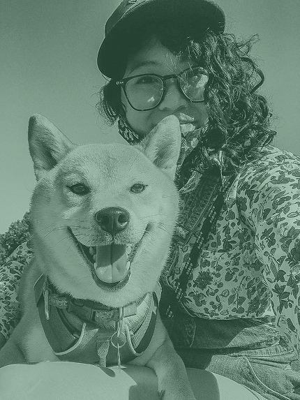

nadine tabing
UX & UI & PRODUCT DESIGN
Hello!
I'm Nadine. I'm a designer experienced with owning UX design and UX research techniques to explore and bring ideas from early concept to finished, validated feature.
I graduated from the University of Washington (B.S. Computer Science, M.S. Human Centered Design & Engineering).
As a designer, I enjoy building things that are not just usable, but do good, are fun, and provide a service for people in everyday life.
I write sci-fi, fantasy, and horror and my writing has been a finalist for the Bram Stoker Award. I also take pictures, draw, play with my dog who decided she didn’t wanna do shows with me anymore, and read a lot (recently, Strange Pictures by Uketsu and the entire Animorphs series).
This site uses Kagitingan and Kawingan by Jad Maza.